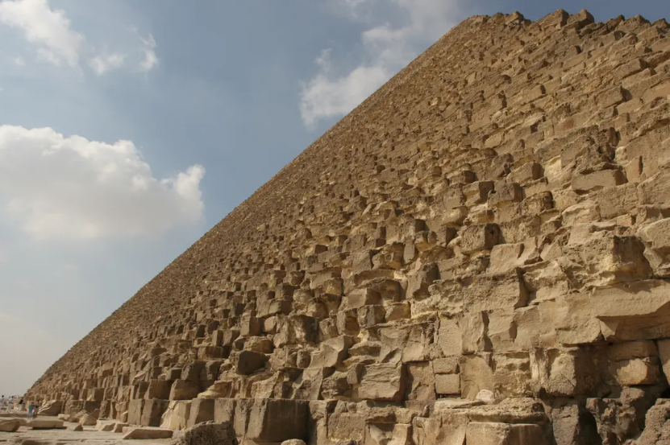
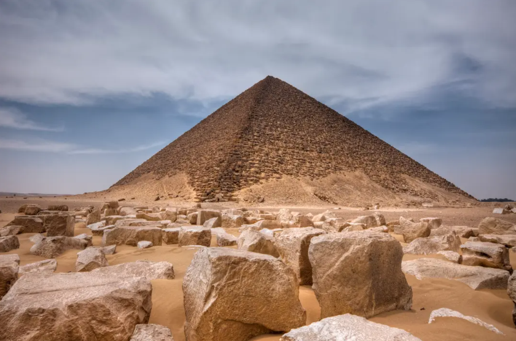
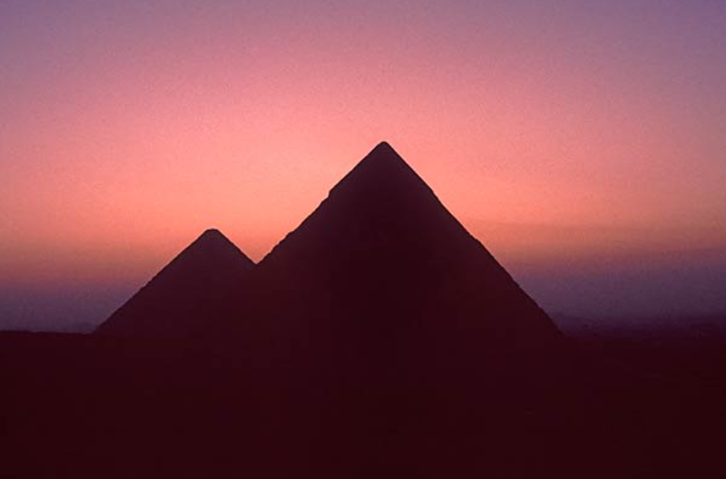
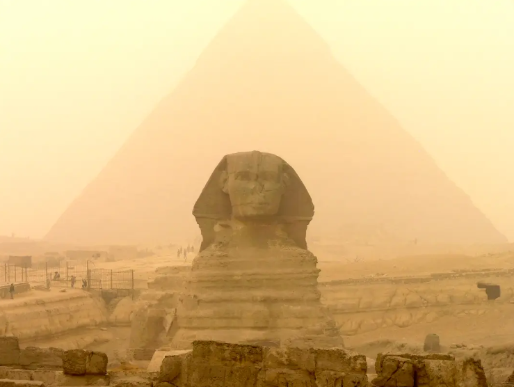

"Truth is the beginning of knowledge" -Aristotle
Are the Great Pyramids as old as scholars claim, or could they be far older than we imagine? And how were they built? Theories range from the labor of thousands to the use of ancient technologies—or even giants. This page takes you through the fascinating and controversial possibilities behind one of the world’s greatest architectural enigmas. Join us as we explore the secrets, myths, and mysteries that surround these iconic structures and challenge everything we thought we knew.
The Great Pyramids of Giza have long been regarded as a marvel of ancient engineering. According to the modern consensus, they were constructed around 4,500 years ago during Egypt’s Old Kingdom, using a workforce that may have included skilled laborers as well as conscripted labor (slaves). Scholars believe that through sheer determination, ingenuity, and manual labor, these massive stone structures were built over several decades. This narrative credits the ancient Egyptians with extraordinary architectural prowess but often stops short of suggesting advanced technological knowledge.
Yet, the Great Pyramids contain mysteries that challenge this conventional view and raise profound questions about the capabilities of their builders. For example, it has been noted that the pyramids are a 1:43,200 scale model of the Earth, meaning that every two seconds, the Earth rotates a distance equivalent to the pyramid’s scale model. Such precision implies an advanced understanding of the Earth’s dimensions, its shape, and its place within the cosmos. This level of geodetic and astronomical knowledge was thought to be unattainable until the advent of modern satellite technology. In fact, it wasn’t until the 1972 World Geodetic System (WGS) that scientists were able to measure Earth’s polar radius with the accuracy reflected in the pyramids’ design.
Further intriguing is the comparison to Eratosthenes, the Greek scholar who calculated the Earth’s circumference within 500 miles of accuracy around 240 BCE—an impressive feat by ancient standards. However, the builders of the pyramids surpassed even this, coming within a mere 313 feet of Earth’s true circumference. Such precision seems improbable, given the tools and knowledge available to the Egyptians as we understand them. Could it be that they possessed advanced scientific insights that have since been lost to time?
These discrepancies raise the possibility that ancient civilizations were far more sophisticated than we give them credit for. To dismiss this as mere coincidence or luck is to overlook evidence that may point to a forgotten chapter of human achievement. As we delve deeper into the design, construction, and potential purposes of the pyramids, we begin to confront the possibility that our ancestors may have been much more advanced than conventional history suggests.
Thanks for taking the time to read this and any thoughts or feedback can be submitted at thee33xp@proton.me